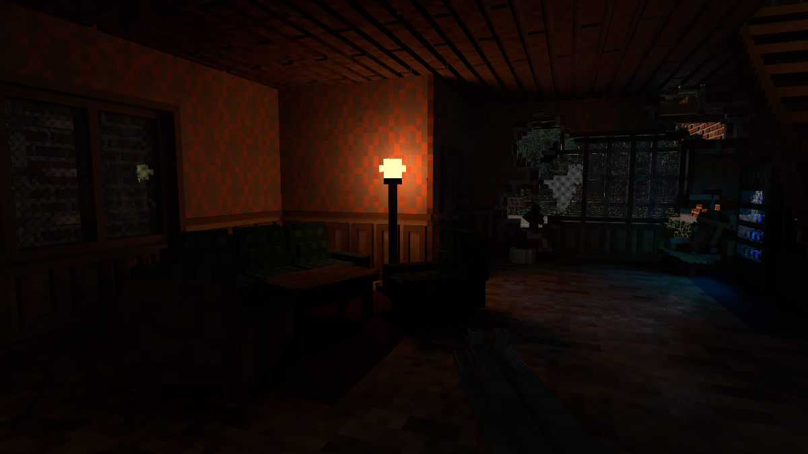

Teardown is a physics-based voxel game. The object is to plan a heist by crafting the optimal route using various tools of destruction offered to the player. There is also a sandbox mode in which the player can wreak havoc to their heart's content or until their computer starts lagging unbearably, whichever comes first. If you haven't already, I highly recommend giving it a shot.
Some of the images and videos in this post are slightly brightened to increase readability and not all of them retain their original resolution (I didn't want this page to be hundreds of megabytes), so just take this whole thing with a grain of pink Himalayan salt.
Without further ado, let's begin!
We will mainly be examining the composition of the following frame, but we will briefly look at others which contain certain effects not seen here.

The frame was captured at maximum graphical settings, minus image effects. The game is running at 2560x1440 (also known as 2K or QHD).
As you can see, there aren't many options to choose from.
Teardown is a physically-inspired deferred renderer that uses voxel ray tracing for certain secondary effects. The renderer is built on OpenGL 3.3, meaning it does not (and cannot) use certain "modern" API features like hardware-accelerated ray tracing (present in Turing+ and Navi 2x+ GPUs) or compute shaders. Almost all effects are rendered in fragment shaders.
Fun fact: Teardown does not feature global illumination, but it does have some features that require off-screen visibility as we'll see.
A frame begins by resetting most of OpenGL's pipeline state. This is common in OpenGL renderers to ensure the frame is starting with a clean slate and prevent leakage from the previous frame.
Like many deferred renderers, Teardown's first big workload is generating the G-buffer (geometry buffer). The G-buffer consists of the following textures:
Since nothing is moving, the velocity texture in this scene is black. A frame with more action looks like this (note that static objects are gray because the colors are remapped):
Here is a short video showing every draw call issued during the pass. The darker frames interspersed are linear depth texture blits. Note that this is only viewing the albedo buffer:
The observer may notice that the wireframe meshes do not precisely match the geometry that is actually rendered. Teardown is actually rasterizing the oriented bounding box (OBB) of each object, then tracing a ray through the box to intersect with the voxel model. The algorithm used is a modified version of voxel DDA, similar to the one in this shader, except that it uses mipmaps to form a dense octree to accelerate empty space traversal. The ray tracing happens entirely within the fragment shader. In the stream in which Tuxedo Labs explained the renderer (which is now deleted), they mentioned this paper specifically.
Another thing to note is that only the backside of each object's OBB is rendered. This allows the camera to clip with the bounding volume and still have the object render.
Let's look at how the 3D texture defining this couch looks (ignoring the less detailed mip level):
You can see that each frame is an XZ-plane slice (Teardown is Y-up) of the model. The color indicates the index (column). Along with the palette (row, passed as a uniform variable), texels can be sampled from the color texture and the material texture:
If you use a magnifying glass or scanning electron microscope, you might notice that the first column of each texture is entirely empty. That is because the material index 0 is used to indicate empty space for ray traversal.
These fine details on flat surfaces are also interesting (contrast increased):
Small details like this are created by projecting various maps onto the voxels. Each texel maps to one voxel. The following are the blend map, albedo map, and normal map used for all geometry (the blend map normally has alpha, which isn't visualized here):
A few times throughout the G-buffer pass (and with no discernable pattern), the linear depth buffer is copied to another texture. As far as I can tell, this texture is used to implement a form of early-z culling in the fragment shader, allowing the fragment to be discarded (and thus skip the expensive ray tracing part) if the rasterized box is behind other geometry. Note that while conservative depth could in theory be used here (instead of a manual test), hardware support for it is limited, and even if it is supported by the hardware, it isn't guaranteed to be enabled or even offer a performance uplift.
Objects are drawn front-to-back so this depth optimization can be leveraged to its fullest.
Because only objects intersecting with the view frustum are rendered, we can deduce that frustum culling is used to reduce the number of draw calls in this pass.
Being a deferred renderer makes rendering transparent objects difficult, since the G-buffer only stores attributes for a single surface. Teardown approaches this by using dithering to implement screen-door transparency. Then, temporal anti-aliasing along with a per-frame subpixel jitter is used to turn this dithered image into a continuous one.
Cables and ropes in Teardown are drawn not as tiny voxels or SDFs, but as good ol' billboarded triangle lists. These are drawn after all the solid geometry.
After cables, smoke and other particle effects are rendered. Some of them sample from a texture atlas:
Teardown renders smoke and other billowy particle effects (like the fire extinguisher foam) in a clever way. Each particle is drawn as four triangles arranged as a hollow square pyramid facing the viewer. The vertex normal is then interpolated across the face of the triangles, which, after shading, will give the appearance of being hemispherical. All for the price of just four triangles! These images should make it a bit clearer:
If we zoom in closely on the normals, we can see that every other pixel's normal is reflected over the camera vector. This causes those pixels to be shaded as though they were on the other side of the virtual sphere, making particles appear to have volume (and not look like they're tracking the camera as sprites often do in games).
It looks like abstract art when it's this zoomed-in.At this point, we still haven't addressed the issue of transparency. One problem is that the G-buffer can only represent one surface per pixel, when there can be several overlapping transparent smoke particles that overlap. The solution that Teardown uses is to render opaquely as normal, but randomly discard pixels by comparing their alpha with a sample from a blue noise texture. This produces a noisy image, which is later resolved with TAA.
These techniques, together, produce the final result:
Rain and snow are rendered as a cluster of a few thousand billboards in front of the camera, whose orientations are computed on the CPU. Similar to smoke, the fragment shader for rain and snow uses a dithered approach to transparency.

Snow is rendered much in the same way as rain, except without an impact effect when it hits the ground.
The splash effect for rain is created by placing perpendicular quads on the ground. Here is an example of the quads that are rendered for rain. A very similar-looking arrangement is drawn for snow, minus the tiny quads on the ground representing splashes.
Water is drawn, perhaps unsurprisingly, as a series of quads (one for each plane) at the very end of the G-buffer pass. A static foam effect is drawn on top of the entire body of water. Then, up to 64 smaller, distorted foam "splashes" that appear in the wake of boats or when an entity intersects with the water.
A single foam texture is used for these effects.
As far as I can tell, water is the only effect that sets the reactive mask (B component of the motion buffer). This is likely due to the fact that water is an animated surface, which cannot be naïvely reprojected without smearing artifacts. The reactive mask will be used to aggressively clamp the color of reprojected color samples in the TAA pass.
The small waves and ripples are made by offsetting the normal, as usual.
With complete shading and denoising, the water looks as such:
The new focal plane is computed by sampling the linear depth buffer in a spiral around the center of the screen using the golden ratio. Here is a simple shader that shows the pattern used. The new focal plane is then blended with the old focal plane (20% of the new focal plane is used) to create a smooth transition over several frames. The updated focal plane is written to a 1x1 RG16_FLOAT texture and is later used for depth of field (which is disabled in this frame).
The normals of nearby pixels are blurred in a full-screen pass using the same sampling technique as previously described. This gives the illusion of objects being beveled after they are shaded.
In this pass, proxy geometries for the lights are drawn and pixels receive direct illumination, much like a classical deferred renderer. What Teardown does differently is, again, in the fragment shader as we'll explore.
The result of this pass is the following texture:
After all visible geometry is rendered to the G-buffer, lighting can be applied. The lighting pass in Teardown is broken into three steps.
The world volume is a 1252x128x1252 texture, which represents the opaque voxels in the level. This texture is used for all ray tracing that occurs after generating the G-buffer, so it's important to understand how it works. Here are the first few hundred layers:
Levels are not constrained to the size of the volume, but they won't be much larger since this one is already over 200 megabytes in size.
Each texel in this volume represents not one, but eight (2x2x2) voxels packed into a single 8-bit unsigned integer! This means the 1252x128x1252 texture represents a 2504x256x2504 voxel grid.
The texture has three total mip levels. Level 0 is the full-resolution grid, while levels 1 and 2 store a reduced-detail version of the world. These lower levels are used to implement cheap "sparse" traces that can traverse multiple voxels at once. I will explain those later in this post.
Since I could only see graphics API calls in my study, I could not determine exactly how the world texture is generated (especially how non-grid-aligned objects map to it). Instead, enjoy an common artifact that results from this voxelization process.
Ambient lighting is computed by casting two rays per pixel in cosine-weighted random directions on the unit hemisphere. The starting position of every ray is also jittered in all dimensions to, according to one comment, "hide voxel artefacts", though I couldn't see much of a difference in this scene when removing it.
The intensity of ambient lighting depends on the distance the ray travels before colliding with an opaque voxel. The farther the ray travels, the more ambient lighting will be used. In other words, the surface at the pixel is considered "less obscured" and thus more indirect light from around the scene can reach it (that's what is being approximated, anyway). Any ray that manages to travel 24 units without collision will be terminated and the full ambient lighting constant will be used.
I experimented with changing the ambient lighting sample count and ray distance. The first row shows one versus eight rays, and the second row shows 12-unit versus 48-unit rays. Note the noise and brightness levels.
Another thing to note is that while I call this pass "ambient lighting", it's basically computing ambient occlusion. "Lighting" comes from the fact that the shader computes the full ambient lighting and stores it in a texture to be later composited, rather than storing ambient visibility (a scalar) and computing the ambient contribution later.
Teardown uses three different global ray tracing functions for different purposes, simply named raycastShadowVolume, raycastShadowVolumeSparse, and raycastShadowVolumeSuperSparse (I question the use of the term "shadow" here, but I digress). The ambient lighting pass uses the "SuperSparse" variant, as a high level of precision is not needed for this effect.
raycastShadowVolumeSuperSparse does a quick four-level trace after sampling a direction to determine whether a ray is blocked:
After ambient lighting, the lighting from the sun is added. To do this, a ray from each pixel is shot in the direction of the sun. Like in the ambient lighting pass, the position of each ray is jittered, giving a constant-width penumbra on shadows.
This scene only uses the jitter for constant-width penumbras. However, true penumbras can be trivially added as the code for it is already in this shader in the form of a "light spread" parameter. Interestingly, some other scenes do use this parameter, but it seems like the value is either high (leading to huge penumbras) in sunrise/sunset scenes, or 0 (leading to sharper shadows) at midday.
The following compares light spread values of 0 and 0.02.
The sun lighting pass uses the sparse ray casting method. This method differs from the super sparse tracing method in that it dynamically switches between LOD levels based on the 'sparseness' of the voxel grid. In short, hits will reduce the mip level for the next step of the trace, while misses will increase it.
In classic deferred renderer style, lights are rendered with proxy geometry with front-face culling and depth test disabled. Then, all pixels covered by the proxy geometry calculate the contribution from that light. A spherical or hemispherical proxy volume is chosen based on the type of light, as we will later see.
The brightness in this video is increased to make lighting changes more obvious.
Notice how there are soft shadows with accurate penumbras. Shadows of very thin objects (like the table legs) are imperfect due to the one-voxel ray jitter and sparse tracing.
Teardown features exclusively area lights, which is made possible thanks to ray tracing. Area lights are difficult to support with rasterization or rock, so they typically rely on unrealistic punctual lights.
Light visibility is determined by tracing a ray to a random point on the light's surface and seeing if there are any opaque voxels in its path. The sparse tracing method is once again used here.
Light attenuation depends on both the distance from the ray to the light (per the inverse square law) and the type of light. Sphere and capsule lights have no extra attenuation since they distribute light evenly in all directions. Cone lights emit light in a spherical cone with both an inner radius of full intensity, and an outer radius where the intensity falls off to zero. Area lights have a similar attenuation factor to cone lights, except there is only one cosine to consider rather than two.
You have probably noticed that the various stochastic effects create a lot of noise in the previous videos and images. Reducing noise is done by taking more samples for these effects. However, samples are quite costly, so instead of simply taking more samples per pixel each frame, Teardown reuses samples from the previous frame to reduce noise.
Teardown's spatiotemporal filter is quite simple- it begins by taking 12 Poisson disk-distributed samples around the current pixel, then blends them together using bilateral weights (planar depth and normal). Next, the pixel is reprojected into the previous frame using its motion vector. The previous frame's color is sampled, then clamped to the min and max color value of the new frame to minimize ghosting. Finally, the new and old colors are mixed with a 50% blend for temporal accumulation.
Until this point, we have only observed demodulated irradiance. That is, the color of the surface if its albedo was 1 and there was no emission. This allows us to filter noisy input (lighting) without unnecessarily blurring non-noisy input (albedo and emissive).
This pass consists of a single shader whose job is to multiply the lighting by albedo and add emissive.
Volumetric lighting is rendered by first drawing the light proxy volumes (again). Then, a ray is marched from the camera to the far plane. At each step in the ray, another ray is launched from that point toward a random point on the light source to check for visibility. If the light is visible, then a small amount of color is accumulated in the volumetric lighting texture.
I cranked the brightness up a lot in this one, otherwise the effect would be unnoticeable.
Sunlight volumetrics are calculated similarly, except instead of a proxy volume, the whole screen is affected.
Volumetric lighting is rendered at quarter resolution (half on each axis) since it is a costly effect.
The volumetric buffer is denoised similarly to how illumination is denoised. First, several samples of the volumetric buffer are taken, then combined using a bilateral filter to prevent blurring over edges. Then, the motion vectors are used to find a sample of the previous frame's volumetric buffer, which is then mixed in a 50-50 ratio to produce the final smooth color.
One thing to note is that while it's not technically accurate to reproject volumetric lighting like this (due to parallax), the artifacts are usually quite minimal as fog is a very low-frequency effect.
For any reflective surface (whose G-buffer reflectivity is greater than zero), a world-space ray is cast in reflection direction, jittered by a small amount depending on the surface roughness. This jitter gives us blurry reflections for rough materials and sharp reflections for smooth ones. Rays will travel up to 32 units before terminating. If no voxels are hit during the ray's journey, then the path is considered unblocked. In this case, the color of the skybox will be used for the reflection. If the ray hits a voxel that is visible on the screen, its color will be used. This essentially allows for off-screen objects to occlude specular rays, while on-screen objects can have their lighting visible in reflections.
Depending on the graphics settings, either the sparse or super sparse tracing method will be used for tracing reflections.
In most cases, the reflections are blurry enough that occlusion is all we need. However, for some surfaces (like this smooth water), the missing information can be quite apparent.
Reflections are drawn into a separate buffer so they can be denoised separately.
Because specular lighting is a high-frequency phenomenon, a spatial filter would remove important detail from the image. Therefore, Teardown uses only a temporal blend whose factor depends on the difference in reflectivity between the previous and current frame reflection (a greater difference means more of the current frame will be used). As usual, the pixel is first projected to its location in the previous frame using the motion vector.
Now that diffuse, specular, and fog have been rendered and denoised, they can be composited into a single image.
If the surface is metallic, the specular color gets attenuated by the surface albedo. Then, the final surface color is a blend between diffuse and specular, based on the surface reflectivity.
Finally, the illuminated fog and height-based fog are added to the surface color, and the skybox is rendered.
At this point (after all opaque surfaces have been shaded), transparent sprites like glare from lamps and the sun are drawn. The in-game photo mode quite effectively reveals how these are drawn:
As you can see, these are drawn as camera-aligned billboards which only appear when the center of the light source is visible. They are essentially placed on top of the rendered image, so they aren't subjected to depth testing.
To automatically adjust the exposure of the virtual camera, Teardown first finds the average luminance of the image. This is done by rendering the luminance of the image to a 256x256 texture, then generating its mip chain to get a series of averaged luminances.
After the mip chain is generated, the mean luminance is calculated with a custom kernel by sampling mip 6 (4x4 for those who didn't want to do the math) five times in an X pattern. This is done instead of sampling the last mip so the center sample can be given more weight than the corners. The target exposure is then calculated by taking a per-scene "desired brightness" parameter and dividing it by the image brightness (the luminance). This tells us how much the virtual camera's exposure needs to be adjusted to match the desired brightness.
All this only calculates the target exposure. Because we don't want the image brightness to rapidly change (creating a flickering effect) while turning, the real exposure is a mix between the old exposure and the target exposure with an alpha of 0.05. This value is rendered to a 1x1 texture which will later be used to expose the image.
TAA is Teardown's primary method of anti-aliasing. The implementation in Teardown samples the current frame in a plus pattern to compute a min and max color. The area around the reprojected "old" sample (last frame's output) is sampled to compute another min and max color in a similar manner. Then, the new and old values are compared for similarity to determine a value t. A low t means the old sample will be used, while a high t means the old sample clamped to the current frame's min and max color will be used. This color is then blended with the current frame's sample to produce the final color.
t is positively influenced by each pixel's velocity as well as the reactive mask. In essence, a higher t means the old sample cannot be trusted to be correct (hence the clamp), while a lower t indicates that the old sample is likely to be correct.
As is standard for TAA implementations, a subpixel jitter to the projection matrix is applied each frame to ensure many subpixel samples can be blended together.
To compute bloom, Teardown first creates a threshold so that only bright areas of the screen get the effect. This threshold is rendered into its own image.
Then, the thresholded image is repeatedly downsampled to 20x11 (from 2560x1440) using a separable 7x7 gaussian filter. The video is brightened for clarity.
Then, each of the low-detail bloom images is composited onto a half-resolution image using a simple bilinear sampler. The ultimate effect is a wide high-order blur with a sharp peak and a long tail (contrasted with a single gaussian, which can only produce one or the other). This video was also brightened for clarity, as the final effect is rather subtle.
Before compositing the bloom image onto the screen, a very simple temporal reprojection-accumulation pass is done, blending the old bloom with the new bloom in a 50% mix. This pass makes no visible difference in this scene, but I suspect it's used to prevent flickering bloom in scenes with bright subpixel features (which would be captured every Nth frame by the camera jitter or during motion).
The final thing Teardown does to the raw image is apply all post-process effects in a single shader. This includes:
1 - exp(-color). I don't know the name of this operator, but it behaves like a more-quickly-saturating version of ReinhardThe UI is the final thing to be rendered, and it consists of only a few quads that are drawn and blended straight onto the framebuffer.
The crosshairs are drawn first as quads with an image placed on top.
Lastly, characters of text are rendered individually with a signed distance field (SDF) font atlas. SDFs are useful for rendering anti-aliased text at various degrees of magnification.
Here is the final image once more. Hopefully this post has given you a deeper understanding of Teardown's renderer, and with it, a deeper appreciation for its graphics.
These are my thoughts on reasonable improvements to the renderer. Without having profiled the game (let alone with these changes implemented), don't be certain that any of these could lead to noticeable improvements. And, since I'm not the developer of Teardown, I am lacking a large amount of context which could nullify some of these ideas.
Every graphics programmer has indulged in excessive G-buffer optimization at least once in their lives. These are my thoughts on how the G-buffer could be laid out more compactly.
The custom early-z mechanism used in Teardown is quite clever, but . While it is commonly asserted that rendering feedback loops (reading from the depth buffer, performing manual early-z test, and writing to the same buffer) are impossible, they are patently not. Thinking about the problem, I realized that Teardown spawns exactly one fragment shader invocation per fragment, per draw. That makes it a candidate to do the early-z test on the hyperbolic depth buffer and use glTextureBarrier between draws. While calling glTextureBarrier for every draw might increase GPU drain and fill time, gaining perfect early-z granularity and not having to blit a full-screen buffer several times per frame could offset that (profiling required!).
These are prevalent in games that want to do full-screen effects. It just makes sense to render two triangles that together cover the screen, and indeed Teardown does this many times.
As it turns out, there is an inefficiency in doing this! Along the shared edge of the triangles, unnecessary helper invocations are created, which generate partially-filled waves. The solution? Draw a humongous triangle that covers the screen. There will be no extra fragment shader invocations and no clipping, thanks to the guard band. The performance benefit is admittedly small (and real), but implementing this is almost zero effort.
I was going to do a high-level performance analysis of Teardown to determine areas that can be improved and if my suggestions even have a chance of helping, but this post is already long enough. At some point I will* release a part 2 where I do this.
Special thanks to deccer, martty, pixelduck, clepirelli, void, geryu, DomeboyRichter, and everyone else on the Graphics Programming discord who gave feedback. I would also like to thank GPVM for enduring my live presentation of this in early Janurary, when this post was still a WIP.
*may